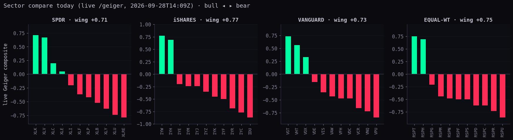
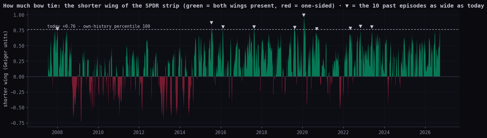
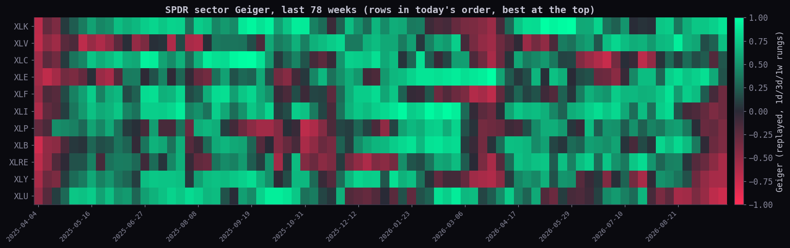
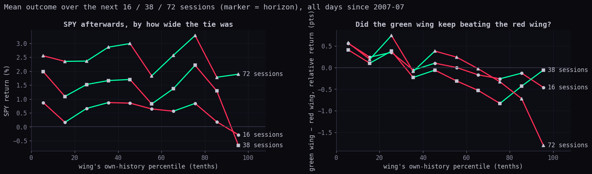
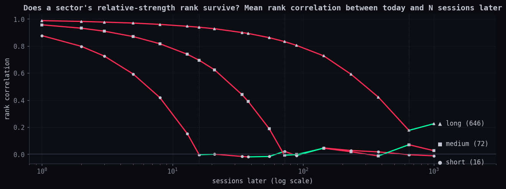
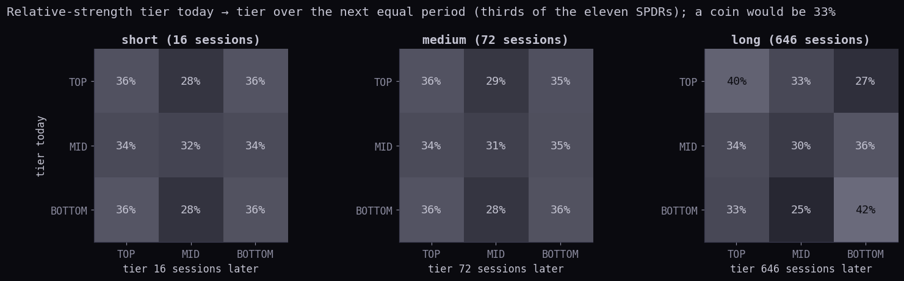
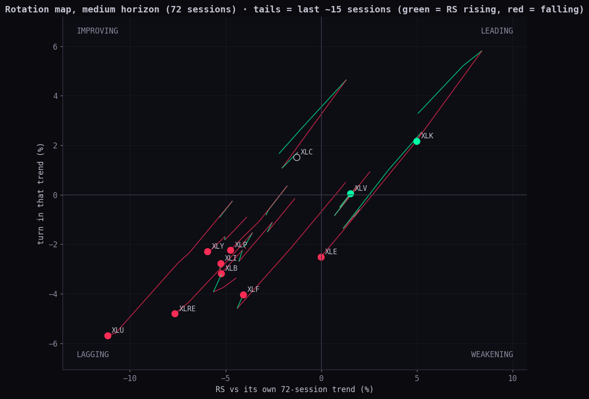
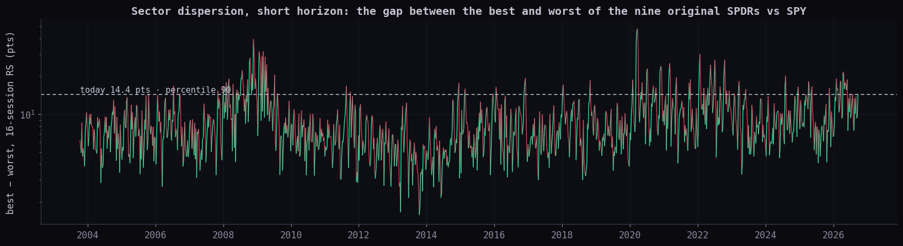
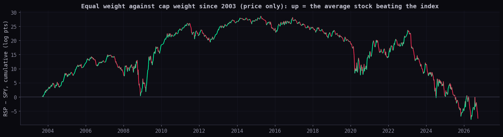

/geiger rung by rung exactly (1d, 3d and 1w: largest difference 0, 0, 0, across 46 funds). Every percentile is the reading's place in its own history (1 = lowest ever, 100 = highest ever). Green and red follow direction.
Percentile = place in the measure's own history since the data allow (1 lowest, 100 highest). Readings are Friday 2026-09-25's close, taken on the morning of 2026-09-28.
| measure | today | own-history percentile | what it means |
|---|---|---|---|
| Bow tie · shorter wing (SPDR, replayed) | +0.76 | 100 | How far BOTH the green and the red wing reach. The larger, the more the strip looks like a bow tie. |
| Bow tie · whole width, best − worst | 1.63 | 99 | Gap between the strongest and weakest sector Geiger. |
| Bow tie · thin middle (knot) | 0.37 | 29 | 0 = the middle bar is flat. Low = a thin knot. |
| Share of the eleven sectors above zero | 36% | — | 4 of 11 green. |
| Short vs long agreement (1d rung order vs 1w rung order) | +0.92 | 91 | +1 = the fast and slow orders agree. It is high: this tie is not a fast flicker against the slow trend. |
| Order now vs 16 sessions ago | +0.55 | 48 | Rank correlation of the Geiger order. −1 = the wings swapped. |
| Order now vs 72 sessions ago | -0.02 | 27 | About zero: over a quarter, the order has been reshuffled. |
| Sector dispersion · short (16 sessions), best − worst RS | 14.4 pts | 90 | Nine original SPDRs (constant roster since 2003). |
| Sector dispersion · medium (72 sessions), best − worst RS | 22.4 pts | 78 | Nine original SPDRs (constant roster since 2003). |
| Sector dispersion · long (646 sessions), best − worst RS | 55.5 pts | 49 | Nine original SPDRs (constant roster since 2003). |
| Equal weight vs cap weight · RSP − SPY, short | -4.29 pts | 1 | Low = the average S&P stock is trailing the index (narrow leadership). |
| Equal weight vs cap weight · RSP − SPY, medium | -4.17 pts | 7 | Low = the average S&P stock is trailing the index (narrow leadership). |
| Equal weight vs cap weight · RSP − SPY, long | -15.70 pts | 6 | Low = the average S&P stock is trailing the index (narrow leadership). |
| sector | fund | Geiger (replayed) | Geiger (live) | short 16: RS · rank · pct | medium 72: RS · rank · pct | long 646: RS · rank · pct | RRG 72 quadrant · days in · pct of stays |
|---|---|---|---|---|---|---|---|
| TECH | XLK | +0.86 | +0.71 | +5.87 · #1 · 100 | +2.11 · #3 · 62 | +23.00 · #1 · 89 | LEADING · 7 · 70 |
| HEALTH | XLV | +0.70 | +0.67 | -2.12 · #3 · 20 | +6.51 · #1 · 90 | -26.49 · #8 · 8 | LEADING · 2 · 40 |
| COMMS | XLC | +0.21 | +0.20 | -0.33 · #2 · 45 | -2.75 · #5 · 26 | -5.92 · #3 · 46 | IMPROVING · 1 · 21 |
| ENERGY | XLE | +0.19 | +0.05 | -5.62 · #7 · 11 | +3.60 · #2 · 68 | -5.13 · #2 · 57 | LAGGING · 1 · 17 |
| FINANCIALS | XLF | -0.32 | -0.37 | -5.82 · #8 · 4 | -1.14 · #4 · 48 | -11.45 · #5 · 36 | LAGGING · 8 · 73 |
| INDUSTRIAL | XLI | -0.32 | -0.20 | -2.18 · #4 · 12 | -7.23 · #6 · 4 | -7.55 · #4 · 15 | LAGGING · 28 · 92 |
| STAPLES | XLP | -0.38 | -0.42 | -4.95 · #6 · 4 | -8.39 · #7 · 8 | -32.54 · #10 · 6 | LAGGING · 7 · 70 |
| MATERIALS | XLB | -0.39 | -0.52 | -6.94 · #10 · 2 | -8.58 · #8 · 8 | -28.47 · #9 · 4 | LAGGING · 16 · 85 |
| REAL EST | XLRE | -0.59 | -0.79 | -5.90 · #9 · 5 | -12.66 · #10 · 5 | -35.24 · #11 · 16 | LAGGING · 22 · 90 |
| DISCRET | XLY | -0.59 | -0.63 | -4.62 · #5 · 3 | -9.23 · #9 · 3 | -23.28 · #7 · 2 | LAGGING · 18 · 86 |
| UTILITIES | XLU | -0.76 | -0.74 | -8.50 · #11 · 2 | -15.87 · #11 · 2 | -17.98 · #6 · 24 | LAGGING · 13 · 82 |
What the Hub shows. COHORT COMPARE → SECTORS draws one centre-zero bar per sector, sorted from most bullish (left) to most bearish (right). The scale stretches so the largest bar touches the edge (index.html cohortCompareStripHTML, cohortCompareSpan). Under the MEMBERS tab each bar is the average Geiger of the sector's member companies. Under SPDR, iSHARES, VANGUARD and EQUAL-WT each bar is the fund's own Geiger (SECT_FAMILY_FUNDS). The live Geiger is a weighted blend of seven timeframes (3h, 4h, 6h, 12h, 1d, 3d, 1w, with Alan's saved Equalizer weights). Each timeframe is half trend (how orderly the 5 → 200 moving-average fan is) and half momentum (RSI 14 and Williams %R).
How it was rebuilt for history. Daily bars can rebuild the 1d, 3d and 1w timeframes exactly. The Hub's own replay maths were used (geiger-replay.mjs), with 3-day and weekly bars grouped exactly as the chart API groups them. The three are weighted as Alan's Equalizer weights them (1d 3.178477, 3d 2.576738, 1w 0.987499). The four intraday timeframes cannot be rebuilt for past years. Checked against today's live values across 46 funds, the three rebuilt timeframes match exactly, and the rebuilt blend tracks the live seven-timeframe blend at correlation 0.986 (rank 0.965, average gap 0.113). A day counts only once every timeframe has its full nine-line fan, which starts the history at 2007-07-06.
The bow tie as a number. The shorter wing is the smaller of (strongest sector's Geiger) and (minus the weakest sector's Geiger). It is large only when both a long green wing and a long red wing exist at the same time. At zero or below, the strip is one-sided. Alongside it: the whole width (best − worst), the knot (how flat the middle bar is on the autoscaled strip), and the share of sectors above zero. Its history, in quantiles: 10th -0.27 · 25th -0.04 · 50th +0.20 · 75th +0.42 · 90th +0.58 · 95th +0.65 · 99th +0.76.


An episode opens on the first day the wing reaches today's level after at least 16 sessions below it.
| from | to | days at/above | peak wing | green wing (top 3) | red wing (bottom 3) | SPY next 16 | next 38 | next 72 | green − red next 72 |
|---|---|---|---|---|---|---|---|---|---|
| 2008-01-03 | 2008-01-03 | 1 | +0.77 | XLE +0.83, XLB +0.56, XLP +0.14 | XLI -0.21, XLF -0.72, XLY -0.77 | -6.9% | -5.7% | -5.5% | +6.6 |
| 2015-07-17 | 2015-08-04 | 8 | +0.87 | XLY +0.84, XLV +0.83, XLF +0.82 | XLI -0.04, XLB -0.40, XLE -0.79 | -0.9% | -8.2% | -1.7% | +1.5 |
| 2016-02-09 | 2016-02-10 | 2 | +0.80 | XLU +0.86, XLP +0.45, XLI -0.27 | XLE -0.65, XLV -0.69, XLF -0.78 | +7.5% | +9.6% | +10.1% | -7.8 |
| 2017-08-17 | 2017-08-22 | 4 | +0.80 | XLU +0.77, XLK +0.53, XLP +0.23 | XLY -0.10, XLB -0.13, XLE -0.81 | +2.5% | +4.8% | +7.8% | -4.2 |
| 2019-08-15 | 2019-08-27 | 4 | +0.79 | XLRE +0.83, XLU +0.72, XLP +0.39 | XLF -0.24, XLI -0.29, XLE -0.78 | +4.7% | +2.3% | +9.8% | -8.0 |
| 2020-01-24 | 2020-02-24 | 14 | +0.99 | XLU +1.00, XLK +0.97, XLRE +0.76 | XLF +0.18, XLB -0.02, XLE -0.81 | +2.4% | -31.3% | -13.3% | +15.0 |
| 2020-09-15 | 2020-09-15 | 1 | +0.77 | XLB +0.77, XLY +0.58, XLRE +0.53 | XLU +0.07, XLF -0.11, XLE -0.84 | +0.2% | +2.9% | +9.0% | -7.0 |
| 2022-05-06 | 2022-05-06 | 1 | +0.78 | XLE +0.83, XLP +0.22, XLU +0.15 | XLI -0.63, XLY -0.67, XLC -0.78 | +0.4% | -7.6% | +2.6% | -1.0 |
| 2022-11-03 | 2022-11-08 | 4 | +0.81 | XLE +0.80, XLV +0.28, XLF +0.20 | XLK -0.46, XLY -0.71, XLC -0.80 | +6.5% | +3.3% | +9.3% | -14.1 |
| 2023-05-26 | 2023-06-01 | 3 | +0.80 | XLK +0.84, XLC +0.74, XLY +0.55 | XLB -0.58, XLRE -0.63, XLU -0.78 | +3.5% | +7.8% | +6.5% | +6.3 |
"Days like today" are the 42 days with a wing at or above today's. Forward returns run close to close, price only. The interval is a 90% moving-block bootstrap of (like-today mean − all-days mean), with blocks as long as the horizon, 600 resamples and a fixed seed. An interval that includes zero means "not distinguishable from an ordinary day".
| outcome | next 16: like today · all days · 90% interval of the difference | next 38: like today · all days · 90% interval of the difference | next 72: like today · all days · 90% interval of the difference |
|---|---|---|---|
| SPY return % | -0.99 (med +1.13, 54.8% up) · +0.54 (65.1% up) · -4.42 to +1.81 | -8.89 (med -6.95, 42.9% up) · +1.30 (68.4% up) · -18.60 to +1.39 | -0.76 (med -0.71, 47.6% up) · +2.45 (71.7% up) · -7.50 to +4.02 |
| green wing − red wing (relative to SPY, pts) | +0.27 (med +0.71, 54.8% up) · +0.02 (52% up) · -2.28 to +2.38 | +6.17 (med +1.23, 66.7% up) · -0.15 (49.7% up) · -0.93 to +12.74 | +1.90 (med -0.74, 47.6% up) · -0.07 (50.5% up) · -5.71 to +7.49 |
| green wing vs SPY (pts) | -0.43 (med -0.12, 50% up) · -0.19 (47.3% up) · -1.38 to +0.57 | +0.04 (med -0.03, 47.6% up) · -0.50 (45.4% up) · -1.01 to +1.73 | -2.25 (med -2.25, 31% up) · -0.73 (44.6% up) · -3.68 to -0.10 |
| red wing vs SPY (pts) | -0.70 (med -0.28, 42.9% up) · -0.21 (44.5% up) · -1.82 to +1.05 | -6.14 (med -1.71, 19% up) · -0.35 (44.1% up) · -10.92 to +0.11 | -4.15 (med -0.78, 40.5% up) · -0.66 (42.1% up) · -7.96 to +2.52 |
| spread of sector returns (pts, st. dev.) | +2.96 (med +2.55, 100% up) · +2.76 (100% up) · -0.29 to +0.97 | +6.54 (med +3.74, 100% up) · +4.26 (100% up) · -1.24 to +5.46 | +6.73 (med +5.26, 100% up) · +5.77 (100% up) · -1.76 to +3.16 |
| change in the wing | -0.59 (med -0.62, 0% up) · +0.00 (51.5% up) · -0.72 to -0.48 | -0.77 (med -0.77, 0% up) · +0.00 (51.4% up) · -0.92 to -0.56 | -0.61 (med -0.55, 0% up) · +0.00 (50.3% up) · -0.75 to -0.51 |
The whole range, not just the extreme. Here every day is grouped by its wing's own-history tenth. Rank correlations over all days between the wing and what followed: with SPY -0.007 / -0.018 / +0.014; with green − red -0.086 / -0.067 / -0.088; with the spread of sector returns +0.098 / +0.079 / +0.077 (at 16 / 38 / 72 sessions). All of them are small. A wide tie comes with a slightly weaker SPY, a slight give-back by the green wing, and slightly more sector dispersion afterwards, and none of it is strong.

Horizons, taken from SPY's own swings (the S9 pivot rule: a pivot high is above the N bars before it and at or above the N after, and the reverse for lows; swings alternate):
| pivot window | swings | leg p25 · median · p75 | low-to-low p25 · median · p75 |
|---|---|---|---|
| 5 | 578 | 5 · 8 · 13 | 13 · 18 · 25 |
| 10 | 252 | 10 · 16 · 28 | 26 · 38 · 60 |
| 20 | 143 | 17 · 27 · 49 | 45 · 72 · 108 |
| 40 | 57 | 35 · 54 · 137 | 112 · 172 · 264 |
| 60 | 40 | 46 · 73 · 175 | 170 · 261 · 326 |
| 120 | 16 | 110 · 210 · 402 | 326 · 646 · 909 |
Relative strength at horizon h = the sector fund's log return over the last h sessions minus SPY's, in points. The eleven SPDRs are ranked each day; XLRE joins on 2015-10-08 and XLC on 2018-06-19.

| horizon | rank now vs rank over the next equal period (mean, 90% interval) | leader (#1) stays: median · p75 · p90 · longest (sessions) | top third stays: median · p75 · p90 · longest |
|---|---|---|---|
| short (16) | -0.004 (-0.029 to +0.021) | 2 · 4 · 8 · 34 | 2 · 7 · 17 · 67 |
| medium (72) | -0.008 (-0.059 to +0.046) | 2 · 7 · 17 · 119 | 3 · 10 · 33 · 238 |
| long (646) | +0.176 (+0.049 to +0.363) | 3 · 11 · 44 · 1385 | 3 · 10 · 47 · 1563 |
The persistence curves fall to about zero at exactly the horizon's own length. That is the key fact. Within a window, ranks are sticky only because consecutive days share most of their history. Once the window has fully turned over, the old ranking carries no information, except at the multi-year horizon. Spell lengths are short at the median because a daily ranking flickers near the tier edges; the p90 and longest columns show the real runs. Neighbouring horizons (sensitivity) give the same answer: 18 sessions -0.002, 38 sessions -0.030; 54 sessions -0.022, 172 sessions +0.045; 261 sessions +0.005, 378 sessions -0.005.

The x-axis is where a sector's relative strength sits against its own h-session trend (an exponential average). The y-axis is whether that gap is widening or narrowing, i.e. the gap against its own h-session average. The four quadrants are leading, weakening, lagging and improving.

| horizon | quadrant | stays (n) | median · p75 · p90 sessions | share lasting one day | moves: clockwise · counter · jump across |
|---|---|---|---|---|---|
| short (16) | LEADING | 5339 | 2 · 5 · 9 | 36% | 48% · 30.6% · 21.4% |
| WEAKENING | 3327 | 1 · 2 · 4 | 54.3% | ||
| LAGGING | 5426 | 2 · 5 · 9 | 34.3% | ||
| IMPROVING | 3640 | 1 · 2 · 4 | 55.4% | ||
| medium (72) | LEADING | 2388 | 3 · 10 · 24 | 32.6% | 50% · 41% · 8.9% |
| WEAKENING | 1943 | 2 · 4 · 8 | 41% | ||
| LAGGING | 2619 | 3 · 9 · 23 | 32.4% | ||
| IMPROVING | 2244 | 2 · 4 · 8 | 41.7% |

| horizon | best − worst today (9 original) | percentile | median · 90th percentile of history | all eleven (since 2018-06) | percentile |
|---|---|---|---|---|---|
| short (16) | 14.4 pts | 90 | 7.7 · 14.7 | 14.4 pts | 81 |
| medium (72) | 22.4 pts | 78 | 16.1 · 30.3 | 22.4 pts | 59 |
| long (646) | 55.5 pts | 49 | 56.1 · 98.1 | 58.2 pts | 34 |

RSP (every S&P 500 stock at the same weight) against SPY (weighted by size): short 16 sessions -4.29 pts (1st percentile); medium 72 sessions -4.17 pts (7th percentile); long 646 sessions -15.70 pts (6th percentile).
Per sector, the Invesco equal-weight fund minus the SPDR fund. The equal-weight funds only have history under their current tickers from 2023-06-07, so these percentiles cover about three years.
| sector | EW − SPDR | short 16: pts · pct | medium 72: pts · pct |
|---|---|---|---|
| MATERIALS | RSPM − XLB | -0.73 · 21 | +0.10 · 57 |
| ENERGY | RSPG − XLE | -1.20 · 12 | -2.07 · 6 |
| FINANCIALS | RSPF − XLF | -0.98 · 18 | -0.66 · 43 |
| INDUSTRIAL | RSPN − XLI | -1.16 · 10 | -1.71 · 28 |
| TECH | RSPT − XLK | -2.10 · 12 | -0.40 · 46 |
| STAPLES | RSPS − XLP | -2.96 · 3 | -1.18 · 61 |
| REAL EST | RSPR − XLRE | -0.63 · 25 | -1.56 · 19 |
| UTILITIES | RSPU − XLU | +0.50 · 76 | -0.46 · 22 |
| HEALTH | RSPH − XLV | +0.03 · 53 | +4.57 · 93 |
| DISCRET | RSPD − XLY | -2.51 · 19 | -1.54 · 46 |
| COMMS | RSPC − XLC | -5.86 · 1 | -4.61 · 23 |
| family | sector | fund vs SPDR | correlation of their RS | gap today (pts) | percentile |
|---|---|---|---|---|---|
| ISHARES | MATERIALS | IYM vs XLB | 0.929 | +1.83 | 80 |
| ISHARES | ENERGY | IYE vs XLE | 0.996 | -0.56 | 28 |
| ISHARES | FINANCIALS | IYF vs XLF | 0.974 | -1.85 | 7 |
| ISHARES | INDUSTRIAL | IYJ vs XLI | 0.919 | +1.79 | 91 |
| ISHARES | TECH | IYW vs XLK | 0.947 | +2.32 | 91 |
| ISHARES | STAPLES | IYK vs XLP | 0.848 | +1.57 | 72 |
| ISHARES | REAL EST | IYR vs XLRE | 0.967 | +1.04 | 81 |
| ISHARES | UTILITIES | IDU vs XLU | 0.995 | +1.27 | 94 |
| ISHARES | HEALTH | IYH vs XLV | 0.990 | +1.22 | 95 |
| ISHARES | DISCRET | IYC vs XLY | 0.867 | -0.06 | 54 |
| ISHARES | COMMS | IYZ vs XLC | 0.132 | -6.28 | 25 |
| VANGUARD | MATERIALS | VAW vs XLB | 0.971 | -0.35 | 31 |
| VANGUARD | ENERGY | VDE vs XLE | 0.995 | -0.74 | 26 |
| VANGUARD | FINANCIALS | VFH vs XLF | 0.957 | -0.73 | 21 |
| VANGUARD | INDUSTRIAL | VIS vs XLI | 0.963 | -1.80 | 5 |
| VANGUARD | TECH | VGT vs XLK | 0.940 | +1.75 | 86 |
| VANGUARD | STAPLES | VDC vs XLP | 0.985 | +0.04 | 42 |
| VANGUARD | REAL EST | VNQ vs XLRE | 0.958 | +0.81 | 79 |
| VANGUARD | UTILITIES | VPU vs XLU | 0.996 | +0.20 | 61 |
| VANGUARD | HEALTH | VHT vs XLV | 0.978 | +0.53 | 59 |
| VANGUARD | DISCRET | VCR vs XLY | 0.930 | -0.40 | 37 |
| VANGUARD | COMMS | VOX vs XLC | 0.940 | +2.40 | 89 |
| EQWT | MATERIALS | RSPM vs XLB | 0.967 | +0.10 | 57 |
| EQWT | ENERGY | RSPG vs XLE | 0.989 | -2.07 | 6 |
| EQWT | FINANCIALS | RSPF vs XLF | 0.925 | -0.66 | 43 |
| EQWT | INDUSTRIAL | RSPN vs XLI | 0.950 | -1.71 | 28 |
| EQWT | TECH | RSPT vs XLK | 0.865 | -0.40 | 46 |
| EQWT | STAPLES | RSPS vs XLP | 0.936 | -1.18 | 61 |
| EQWT | REAL EST | RSPR vs XLRE | 0.976 | -1.56 | 19 |
| EQWT | UTILITIES | RSPU vs XLU | 0.988 | -0.46 | 22 |
| EQWT | HEALTH | RSPH vs XLV | 0.908 | +4.57 | 93 |
| EQWT | DISCRET | RSPD vs XLY | 0.549 | -1.54 | 46 |
| EQWT | COMMS | RSPC vs XLC | 0.751 | -4.61 | 23 |
Vanguard and iShares hold smaller companies than the SPDRs, so their gap to the SPDR is a rough size tilt inside each sector. IYZ is a telecom-only fund, not a full communications sector like XLC, which is why its correlation with XLC is 0.13.
GET https://scintilla-massive-chart-api.fly.dev/candles?tf=D&limit=6000 with Origin scintillahub.ai: finished daily bars, split-adjusted, provider MASSIVE. They are saved as served in ~/Library/Application Support/scintilla/stats-cache/sector-rotation-20260928/. Starts: XLRE 2015-10-08, XLC 2018-06-19, Vanguard 2004, equal-weight sector funds 2023-06-07, and everything else 2003-09-11.GET /geiger?symbols=…&detail=1 at 2026-09-28T14:09:27.495Z, saved as live-geiger-snapshot.json. It is used only for today's strips and for checking the rebuild.research/statistics/sector-rotation/: fetch.mjs (GET only), lib.mjs (the arithmetic, fixture-tested in tests/sector-rotation.test.mjs), run.mjs (writes sector-rotation.json), charts.py (the nine images) and page.mjs (this page).